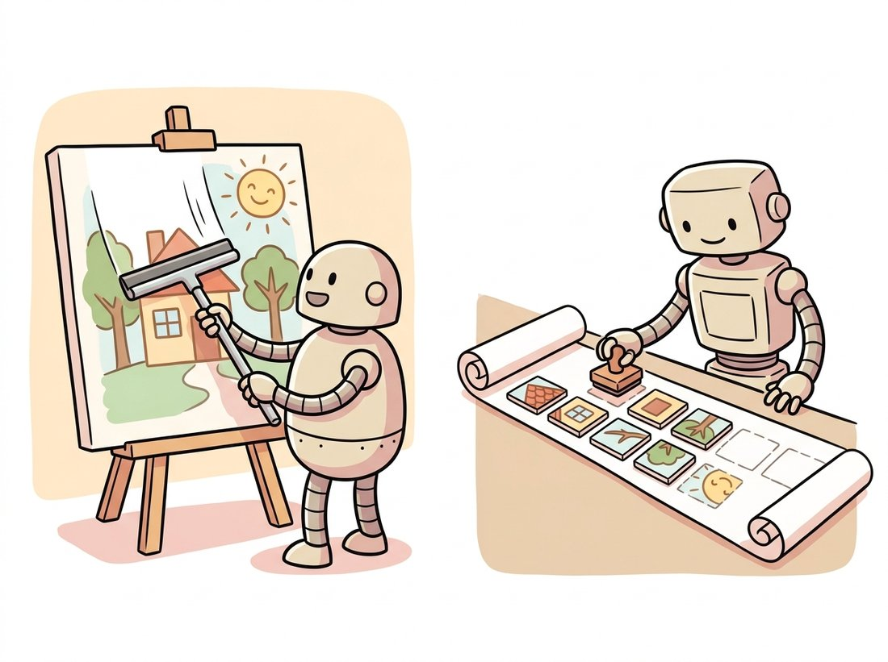

"They asked me to draw a picture, so naturally I spelled it. Two hundred and fifty-six little words, each one a patch of the sky, written left to right like any civilized sentence. The diffusion models think I am old-fashioned. I think they are just bad at reading."
An Autoregressive Image Model That Treats Pictures as Prose
You can generate an image without diffusion at all: compress it into a grid of discrete tokens with a vector-quantized autoencoder, then generate those tokens with a transformer exactly the way a language model generates words. This token-based path comes in two flavors, left-to-right autoregression (Parti) and parallel masked prediction (MUSE), and it is the route by which a single multimodal model can read text and write images in one unified token stream. This section builds the discrete tokenizer, contrasts the two generation orders, and explains why this approach is resurging just as diffusion seemed to have won.
Every system so far in this chapter denoises a continuous latent. There is an entirely different way to generate an image, one that descends from language modeling rather than from the noise processes of Chapter 33. The idea is to make an image discrete, a finite sequence of symbols from a fixed vocabulary, and then reuse the full transformer generation machinery of sequence models. This section is about that path: how it works, how it differs from diffusion, and why it matters more in 2026 than it did in 2023.
1. Making an Image Discrete: VQ Tokenization Intermediate
The enabling trick is the vector-quantized autoencoder (VQ-VAE / VQGAN), a discrete cousin of the VAE you built in Chapter 31. An encoder maps the image to a grid of feature vectors; each vector is then snapped to its nearest entry in a learned codebook of, say, 8192 vectors. The image is now represented by a grid of integer indices, one per spatial location, exactly like a 16-by-16 sentence of 256 "visual words". A decoder reconstructs pixels from the quantized grid. The codebook lookup is the only difference from a continuous autoencoder, and it is what turns a picture into a sequence of tokens that a transformer can model.
Figure 34.4.1 makes the conversion concrete: a continuous image becomes a small grid of integers drawn from a fixed vocabulary. From here, generating an image is generating that grid of integers, and the entire generative problem reduces to a familiar sequence-modeling problem. The "snap to nearest codebook entry" step is a hard lookup with no usable gradient, so ordinary backpropagation cannot train through it. The straight-through gradient estimator is the fix: on the backward pass it simply copies the gradient from the quantized vector back to the encoder as if the lookup were the identity. That one trick lets the codebook lookup train end to end and is the only piece of machinery beyond the ordinary VAE; the rest is the autoencoder you already know.
import torch, torch.nn as nn, torch.nn.functional as F
class VectorQuantizer(nn.Module):
"""Snap each encoder feature vector to its nearest codebook entry."""
def __init__(self, n_codes=8192, dim=256):
super().__init__()
self.codebook = nn.Embedding(n_codes, dim)
def forward(self, z): # z: (B, dim, H, W) encoder features
b, c, h, w = z.shape
flat = z.permute(0, 2, 3, 1).reshape(-1, c) # (B*H*W, dim)
# nearest codebook vector by squared Euclidean distance
d = (flat.pow(2).sum(1, keepdim=True)
- 2 * flat @ self.codebook.weight.t()
+ self.codebook.weight.pow(2).sum(1))
ids = d.argmin(1) # token id per cell
zq = self.codebook(ids).view(b, h, w, c).permute(0, 3, 1, 2)
zq = z + (zq - z).detach() # straight-through estimator for gradients
return zq, ids.view(b, h, w)
vq = VectorQuantizer()
z = torch.randn(1, 256, 16, 16) # encoder output for one image
zq, token_grid = vq(z)
print("quantized features:", tuple(zq.shape))
print("token grid:", tuple(token_grid.shape),
"-> sequence length:", token_grid.numel())argmin over squared distances; the straight-through estimator z + (zq - z).detach() copies gradients past the non-differentiable lookup. Expected output: quantized features: (1, 256, 16, 16), token grid: (1, 16, 16) -> sequence length: 256.Two confusions follow from the word "token". First, the $16 \times 16$ token grid is not a $16 \times 16$ image: each token is a compressed code for an $8 \times 8$ or $16 \times 16$ pixel patch, so the decoder still produces a full-resolution picture, and adding tokens raises detail, not a one-for-one pixel count. Second, an image token does not carry a fixed human meaning the way a word does. Codebook entry 91 is not "sky"; it is whatever recurring local texture the autoencoder found useful to compress, and the same index means different things in different spatial contexts. Treating image tokens as a dictionary of nameable objects, by analogy to language tokens, sets you up to misread what the generator is actually predicting: patches of appearance, not labeled parts.
2. Generating the Tokens, Left to Right: Parti Intermediate
With the image reduced to a sequence of 256 integers, text-to-image generation becomes machine translation: encode the prompt into text tokens, then generate the image tokens one at a time, each conditioned on the prompt and on the image tokens generated so far. Parti is the canonical autoregressive system. It is a standard encoder-decoder transformer, the same architecture used for translation, with the prompt as the source sequence and the image-token grid (flattened in raster order) as the target sequence. Generation is the autoregressive next-token loop of any language model: predict a distribution over the 8192 codebook entries, sample, append, repeat 256 times, then hand the completed grid to the VQ decoder for pixels.
The appeal is unification: image generation reuses, verbatim, the transformer stack, the scaling laws, and the training infrastructure of language models. Parti scaled to 20 billion parameters and showed that image quality improves predictably with scale, just as in language. The cost is the same cost language models pay: generating $n$ tokens takes $n$ sequential forward passes. A 256-token image needs 256 steps, and higher resolutions explode quadratically, which is the weakness the next subsection attacks.
Both paths learn the data distribution and sample from it. Diffusion refines all spatial positions simultaneously over many denoising steps; autoregression commits to one position at a time over many token steps. Diffusion's steps are parallel across space but serial in time; autoregression's steps are serial across space. This is why diffusion historically won on speed at high resolution (it does not pay a per-pixel sequential cost) while autoregression won on clean integration with language models. The masked approach of the next subsection is an attempt to get both.
3. Generating in Parallel: MUSE and Masked Prediction Advanced
MUSE keeps the discrete tokens but throws out the left-to-right order. It is trained like the masked-language-modeling objective of BERT: hide a random subset of the image tokens and predict them all at once from the visible ones and the text. At generation time it starts from a fully masked grid and unmasks in a handful of rounds: predict every masked token in parallel, keep the most confident predictions, re-mask the rest, and repeat. A 256-token image that Parti generates in 256 sequential steps, MUSE produces in roughly 8 to 24 parallel rounds, an order-of-magnitude speedup. This parallel-unmasking schedule is the discrete-token analogue of the few-step samplers that accelerated diffusion in Chapter 33.
import torch
# MUSE-style generation: start from an all-masked token grid and fill it in
# over a handful of parallel rounds, committing only the most confident
# predictions each round, instead of one token per step left to right.
def muse_decode(predict_logits, n_tokens=256, n_steps=12, vocab=8192,
text_cond=None):
"""Iterative parallel unmasking. predict_logits: model -> (n_tokens, vocab)."""
MASK = vocab # special mask id
tokens = torch.full((n_tokens,), MASK) # start fully masked
for step in range(n_steps):
logits = predict_logits(tokens, text_cond) # predict ALL positions
probs = logits.softmax(-1)
sampled = torch.multinomial(probs, 1).squeeze(-1) # one sample per cell
conf = probs.gather(1, sampled[:, None]).squeeze(-1)
# keep an increasing fraction of the most confident predictions
keep = int(n_tokens * (step + 1) / n_steps)
masked = (tokens == MASK)
conf = torch.where(masked, conf, torch.full_like(conf, -1.0))
keep_idx = conf.topk(min(keep, masked.sum().item())).indices
tokens[keep_idx] = sampled[keep_idx] # commit the confident ones
return tokens # complete token gridconf.topk commits only the most confident keep tokens and re-masks the rest, so the grid fills in over a dozen passes rather than the 256 sequential steps of autoregression. The confidence-based scheduling is what keeps quality high despite the parallelism.Figure 34.4.2 contrasts the two orders on a single token grid: Parti commits one cell per forward pass, while MUSE commits the most confident handful of cells each round and re-masks the rest. That confidence-gated commit raises an obvious question. Why iterate at all, rather than predict all 256 tokens in a single parallel pass? Because each position is predicted independently from the same context, so a one-shot commit treats the tokens as if they were statistically independent when in fact they are tightly coupled (the patch left of a fox's ear constrains the patch right of it). Committing everything at once yields locally plausible but globally incoherent tiles. The fix is to commit only the few most confident predictions each round and re-mask the rest, so the next round predicts the still-uncertain positions conditioned on the now-fixed ones; coherence is bought back over a dozen rounds instead of all at once. This is the same dependency problem autoregression sidesteps by construction (each token sees every earlier one), and the confidence schedule is MUSE's way of recovering most of that benefit while keeping the parallelism.
The MUSE decode in this listing is the practical reason token-based generation became competitive on speed: 12 parallel rounds instead of 256 serial steps. It pairs the language-model integration of autoregression with a sampling cost closer to fast diffusion, which is exactly the combination the field wanted.
You rarely train a VQ tokenizer from scratch; strong ones ship pretrained. The diffusers and transformers ecosystems expose VQ models and token-based generators you can load directly.
from diffusers import VQModel
import torch
# A pretrained VQ tokenizer: encode an image to tokens, decode tokens to pixels.
vq = VQModel.from_pretrained("CompVis/ldm-celebahq-256",
subfolder="vqvae").eval()
with torch.no_grad():
latents = vq.encode(torch.randn(1, 3, 256, 256)).latents
recon = vq.decode(latents).sample
print("vq latents:", tuple(latents.shape))VQModel.from_pretrained, replacing the dozens of lines of codebook, encoder, decoder, and straight-through training in Code Fragment 1. The encode and decode calls handle the codebook, the quantization, and the reconstruction; you supply images.4. Why Tokens Are Resurging: Unified Multimodal Models Intermediate
Diffusion appeared to win the text-to-image race by 2023, so why does the token path matter? Because it is the only path that lets a single model both read and write images in one sequence. If an image is a sequence of tokens and text is a sequence of tokens, a single transformer can ingest interleaved text and image tokens and emit either, the foundation of modern multimodal models that answer questions about an image and then generate a new one in the same conversation. The features-and-descriptors thread of Chapter 10, which learned in Chapter 25 to replace hand-crafted descriptors with learned ones, reaches its conclusion here: the universal representation is now a discrete token an LLM can manipulate. Diffusion still produces the highest single-image fidelity, but the token path owns the unified-model frontier, and the two are increasingly hybridized.
Around 2023 it was fashionable to write the autoregressive image model's obituary: too slow, too blurry, decisively beaten by diffusion. Then VAR won a NeurIPS best-paper award in 2024 by beating diffusion on ImageNet, and the largest multimodal models quietly went back to generating images as tokens so they could chat about them. The lesson is a recurring one in this field: an approach written off as obsolete is usually just one good idea away from a comeback, because the hardware and the tooling that grew up around the winner can often be borrowed by the loser. The mnemonic for the two paths: diffusion polishes the whole canvas at once; tokens write it like a sentence. The illustration below puts the two side by side: a whole canvas cleared at once versus one tile placed after another.

Who: A team building an in-app avatar generator that had to return a 512-pixel image in under two seconds on a single mid-range GPU.
Situation: They prototyped with a clean autoregressive token model because it integrated neatly with their existing text-model serving stack and the team already understood the next-token loop.
Problem: A 512-pixel image at their tokenizer's compression needed 1024 tokens, and 1024 sequential transformer forward passes blew the two-second budget by a wide margin even with a KV cache (the standard trick of storing each token's already-computed attention keys and values so later steps do not recompute them). The serial-per-token cost of subsection 2 was the wall.
Decision: They switched the generator to a MUSE-style masked model with the same VQ tokenizer, so the tokenizer and decoder were unchanged and only the generation order changed. The parallel unmasking of subsection 3 brought 1024 tokens down to about 16 rounds.
Result: Latency dropped from roughly nine seconds to under one, comfortably inside budget, with a small quality cost they recovered by adding rounds where latency allowed. The tokenizer investment was preserved.
Lesson: Generation order is a swappable knob once the image is tokenized. If autoregression's per-token latency is the problem, masked parallel decoding often fixes it without touching the tokenizer or decoder, the same separation-of-concerns that the three-station view of Section 34.2 rewards.
Token-based generation is having a renaissance. OpenAI's native 4o image generation (March 2025), which the company describes as an autoregressive model that builds an image token by token, treats image synthesis as token prediction inside the same model that handles text and vision. That shared model is why 4o can edit an image by conversation. Google's Gemini 2.5 Flash Image (August 2025), and its Gemini 3 Pro-based successor Nano Banana Pro (November 2025), brought the same conversational, multi-turn image generation and editing to the Gemini family. VAR (Visual Autoregressive modeling, NeurIPS 2024 best paper) replaced raster-order autoregression with next-scale prediction, generating a coarse token grid and then progressively finer ones, and beat diffusion on ImageNet generation while being faster. MAR (Li et al., 2024) showed autoregression does not even require discrete tokens, generating continuous tokens with a small per-token diffusion head, which directly hybridizes the two paths of this chapter. The 2023 consensus that diffusion had simply won looks premature; the discrete-token line, written off as slow, is back at the frontier on both quality and unification.
The pretrained VQModel of the library shortcut is enough to build an interactive explorer that makes the discrete-token idea of this section tangible, and it touches the token path that the diffusion-focused studio lab in Section 34.6 never visits. Load a VQ tokenizer, encode a photo to its grid of codebook indices, and render the round trip side by side: the original, the integer token grid as a labeled heatmap, and the decoder's reconstruction. Then add the experiment that teaches the most: let the user click a cell and overwrite its token with a different codebook index, decode again, and watch how that single "visual word" repaints its $8 \times 8$ patch, the misconception-busting demo that a token is a patch of appearance, not a labeled object. Difficulty: intermediate, about 60 to 90 minutes. It pairs naturally with the codebook-usage histogram of Exercise 34.4.2 and makes a compelling portfolio piece because it visualizes the exact representation that unified multimodal models manipulate.
Consider a tokenizer that compresses a $512 \times 512$ image to a $32 \times 32$ token grid. (a) How many tokens is that, and how many sequential forward passes does a pure autoregressive model need to generate it? (b) A MUSE-style model uses 16 unmasking rounds regardless of token count; how many forward passes does it need, and what is the speedup factor over autoregression? (c) A latent diffusion model uses 30 denoising steps on a continuous latent; compare its forward-pass count to both token methods and explain why diffusion's count does not grow with resolution the way autoregression's does.
Load a pretrained VQ tokenizer (the library shortcut model works). Encode a small set of images and record, for each, its grid of token IDs. (a) Plot a histogram of codebook usage across all images: are all 8192 (or however many) codes used, or is there severe codebook collapse where most images use a small subset? (b) Take one image, replace a 4-by-4 block of its token IDs with a single repeated code, decode, and observe what that one codebook entry "means" visually. (c) Relate codebook collapse to the mode-collapse problem of the GANs in Chapter 32.
You are architecting a system that must both answer questions about user-uploaded images and generate edited versions in the same chat turn. (a) Argue why a token-based generator integrates more naturally than a separate diffusion model, in terms of how many models you must serve and how the image flows between understanding and generation. (b) Identify the quality and latency costs you would accept for that integration. (c) Describe a hybrid (such as MAR's continuous-token diffusion head) that could keep the unified token interface while recovering diffusion's image fidelity, and explain what part of each path it borrows.